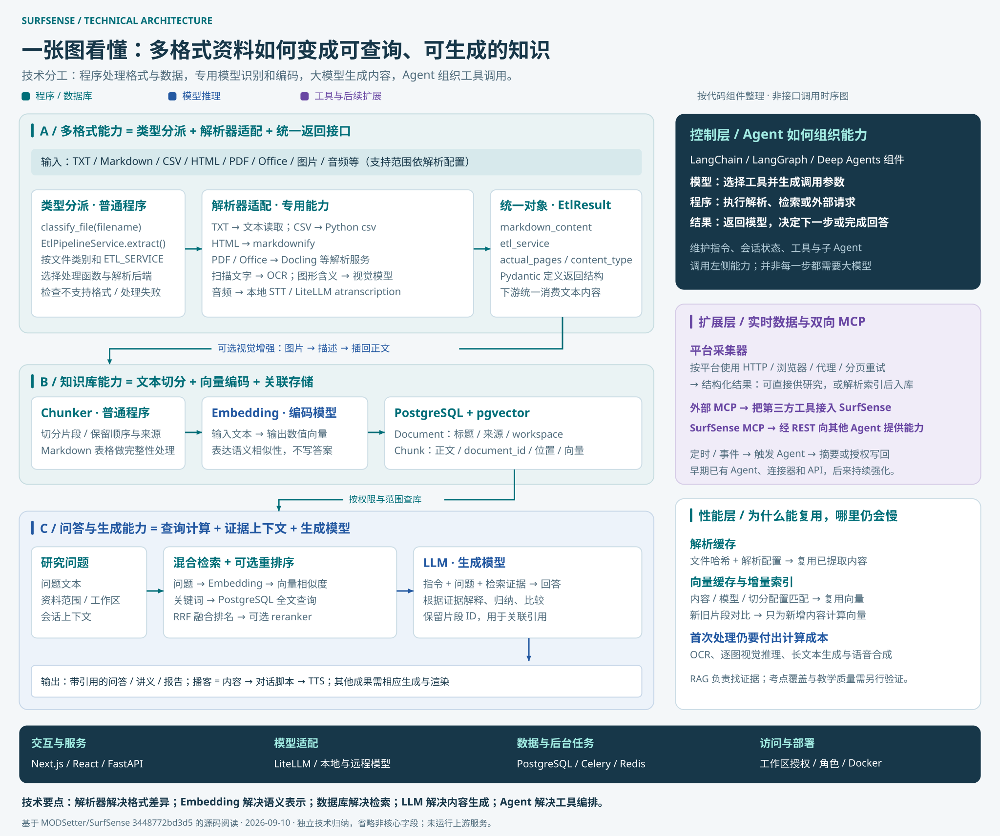

把你的资料，变成可提问的知识库。
导入文档、网页等资料，跨文档问答、总结和对比，查看引用，再将研究内容转成播客。
FROM SOURCES TO INSIGHT
选择一组资料，观察问题如何变成可追溯的研究结果。
勾选本次研究可使用的证据
LIVE DATA, ONE INTERFACE
平台专用连接器返回结构化数据，供研究工作台或外部 Agent 使用。
API 是调用入口，采集器负责取数。 统一的 SurfSense API 不等于各平台的官方 API，也不意味着每个请求都启动浏览器。
NOTEBOOKLM-LIKE CORE · EXTENDED RESEARCH
具体看哪些解析器处理格式、什么模型承担识别与生成、数据库怎样检索，以及 Agent 如何调用这些组件。
导入文档、网页等资料，跨文档问答、总结和对比，查看引用，再将研究内容转成播客。
扩展平台数据采集、外部 MCP、定时与事件触发，并把检索和采集作为工具提供给其他 Agent。

| 用户看到的能力 | 技术如何实现 | 需要理解的区别 |
|---|---|---|
| 导入与理解资料 | 解析文件、语音转写、按配置识图 → 文本切分 → Embedding 向量化 → 保存片段与来源。 | Embedding 表示内容的语义，用于搜索；它不负责写答案。 |
| 与资料对话 | 问题转成查询 → 语义与全文检索 → RRF 融合排名 → 可选重排序 → 将证据交给大模型。 | 这是 RAG：回答时读取资料，不是每次上传都训练模型。 |
| 总结、对比与引用 | 模型结合问题和命中片段组织回答，片段 ID 将引用关联回原文。 | 引用让结论可核查；证据遗漏或归纳错误仍可能发生。 |
| 播客与更多成果 | 播客：研究内容 → 对话脚本 → TTS 合成语音。报告、演示、视频再使用各自的生成和渲染工具。 | 问答模型、语音模型和渲染服务各司其职；不能只靠检索完成全部生成。 |
| 实时网络研究 | Agent 调用平台采集器，按站点使用 HTTP、浏览器等路径，解析成结构化内容；可直接使用或再入库。 | 连接器负责获取数据，Agent 负责决定何时调用；不是每个页面都由模型点击。 |
| 自动化与 Agent 接入 | 时间 / 事件触发同一研究流程；对外 MCP 将 REST 能力包装为工具；外部 MCP 将第三方工具接进来。 | “向外提供 MCP”和“接入别人的 MCP”是两个方向。 |
2025-08-29 的说明已列出资料问答、播客、层级 RAG、研究 Agent、连接器和 API；研究版本进一步强调平台实时数据、MCP 和自动化。图中具体组件按研究版本梳理，未将其全部视为旧版实现。
阅读旧版说明 ↗ 阅读研究版本说明 ↗研究工作台、资料管理与协作界面。
处理请求、文档解析与后台任务；Redis 支撑消息与状态。
保存资料与片段，支持全文匹配和向量相似度查询。
结合 Deep Agents 组件组织工具、子 Agent、上下文与执行状态。
RESEARCH THAT GOES SOMEWHERE
从一次问答，延伸到团队知识、研究交付与持续跟踪。
DELIVERABLE STUDIO
上游提供报告、文档、表格、演示文稿、播客与视频概览等生成能力；质量和可用性取决于模型与服务配置。
定时或事件触发 → 执行 Agent 研究 → 整理变化 → 通过已配置连接器写回。此页面不创建定时任务。
MAKE AN INFORMED CHOICE
部署整个平台、使用云服务，或只给自己的 Agent 接入工具。
通过网页或桌面端管理资料、研究和协作。自部署需要运行后端、数据库、后台任务等服务。
业务程序向后端发送请求，接收结构化结果。需要后端地址、API Key 和工作区权限。
把检索、采集与文档管理暴露为模型工具。MCP 服务通过 REST API 访问后端。
这是上游托管 MCP 的配置示例；需替换占位 Key 并授权工作区。复制配置不会建立连接。
核对的全文检索代码使用 english 配置。中文关键词搜索可能需要适配，语义检索还取决于 Embedding 模型。
服务器、模型、解析和部分采集器的代理都可能产生开销。完全本地处理需要逐项确认依赖。
引用可以定位证据，但不保证模型的归纳准确。网页内容变化、采集失败或索引缺失都会影响结果。
主体使用 Apache 2.0；app/proprietary 下组件使用 BSL 1.1，对向第三方提供商业产品或托管服务有限制。
基于上游提交 3448772bd3d5 的文档与代码阅读。未部署上游系统、未验证平台采集成功率；README 仍注明尚未达到生产就绪状态。
{kind=link}